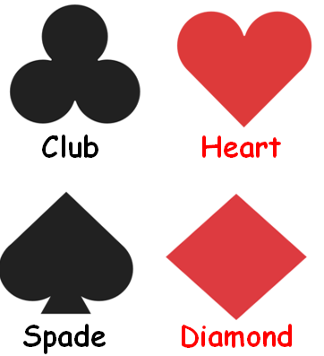

Mathematics
Abdullah Al Mahmud
Probability
Important concepts
- Trial
- Experiment
- Random experiment
- Sample space
- event
Three Definitions
Classical
\(P (A) = \frac{n(A)}{n(S)}\)
Relative frequency
\[\lim_{n(S) \to \infty} \frac{n(A)}{n(S)}\]
Axiomatic
Three axioms
Say, S is sample space and A is an event
- \(0 \le P (A) \le 1\) (NOT \(P(A) \ge 0\))
- At least one of S will occur. P (S) = 1; Certain event.
- \(P(A_1 U A_2 U ... U A_n)=P(A_1) + P(A_2) + ... + P(A_n)\) or
- \[P\left(\cup _{i=1}^{\infty }E_{i}\right)=\sum _{i=1}^{\infty }P(E_{i})\]
Permutaion vs Combination
There are 15 cricketers in BD preliminary team. We got to select 11. C or P?
- Where is P used?
Types of Problems
- Miscellaneous
- Coin
- Die
- Playing Card
- At Once vs One by One
- Box
- Conditional
- Set Theoretic
- Digit
Miscellaneous
Misc Problem #01
What is the probability that in a leap year, there are 53 Fridays?
- In a leap year, there are 366 days, i.e, 52 weeks and 2 days. In each week is a Fridays, so there are no less than 52 Fridays. The remaining two days could be:
- (Sat, Sun); (Sun, Mon); (Mon, Tue); (Tue, Wedn); (Wedn, Thu); (Thu, Fri); (Fri, Sat) = 7
- Total possible outcome = 7 and favorable outcomes = 2
- \(P = \frac{2}{7}\)
Misc Problem #02
Out of the natural numbers 10 through 30, a number is chosen randomly; what is the probability that the number is
- a prime number
- a prime number or multiple of 5
- a prime number or an odd number
- not a perfect square
Misc Problem #03
What is the probability that the product of three positive integers chosen from 1 through 100 is an even number?
- Three possible cases
- All three are even
- Two odd and one even number
- Two even and one odd
- \(P=\frac{^{50}C_3}{^{100}C_3}+...\)
- 0.88
Coin And Die Problem
Tossing A Coing Twice
| First Coin | |||
|---|---|---|---|
| H | T | ||
|
Second Coin |
H | HH | HT |
| T | TH | TT | |
Tossing a coin twice is equivalent to tossing two coins at once
What is the probability that
- The Head appears at the first draw?
- At least one Head appears?
- Less than two Heads appear?
- Only Tails appears?
Flipping A Coin Thrice
| First Two Flips | |||||
|---|---|---|---|---|---|
| HH | HT | TH | TT | ||
| Third Flip | H | HHH | HHT | HTH | HTT |
| T | THH | THT | TTH | TTT | |
What is the probability that
- All three are Heads?
- There are more than one Head?
- The second draw gives a Head?
- The third draw does not give a head?
- The first draw gives a Tail but the the Draw does not?
- At most one Head appears?
Flinging Two Dice at Once
|
Tossing Two Dice at Once |
First Die | ||||||
|---|---|---|---|---|---|---|---|
| 1 | 2 | 3 | 4 | 5 | 6 | ||
|
Second Die |
1 | 1,1 | 1,2 | 1,3 | 1,4 | 1,5 | 1,6 |
| 2 | 2,1 | 2,2 | 2,3 | 2,4 | 2,5 | 2,6 | |
| 3 | 3,1 | 3,2 | 3,3 | 3,4 | 3,5 | 3,6 | |
| 4 | 4,1 | 4,2 | 4,3 | 4,4 | 4,5 | 4,6 | |
| 5 | 5,1 | 5,2 | 5,3 | 5,4 | 5,5 | 5,6 | |
| 6 | 6,1 | 6,2 | 6,3 | 6,4 | 6,5 | 6,6 | |
What is the probability that
- The first numbers is odd?
- The summation of numbers in two draws is a prime number?
- Both numbers are same?
- The second number is bigger?
Playing Card
Concepts (Playing Card)

Each rank has 13 cards.
- Ace (A)
- King (K)
- Queen (Q)
- Jack (J)
- Numbers: 2, 3, 4, 5, 6, 7, 8, 9, 10
- 4+9 numbers = 13 cards.
Card Problem #01
3 cards are drawn from a pack of 52 cards. What is the probability that they are all Kings?
There are 4 Kings. We’ve to draw 3 cards.
- \(P(K) =\frac{^4C_3}{{^52}C_3}\)
Card Problem #02
If a card is drawn from a deck of 52 cards with 4 aces, what is the probability that an ace will not show up?
Let, P(A) = Ace appears
- \(1-P(A)\)
- \(1-\frac 1 {13}\)
Card Problem #03
Two cards are drawn with replacement; What is the probability that they are
- Kings of same color
- Kings of different color
- Not Kings at all
- \(P(BUR) =P(B)+P(R)\)
- \(\frac{^2C_1 \times ^2C_1}{^{52}C_1\times ^{52}C_1}+\frac{^2C_1 \times ^2C_1}{^{52}C_1\times ^{52}C_1}\) Why not \(^{52}C_2\), \(^4C_2\)
- \(1-P(B \cup R)\)
- \(P(K)= \frac{^4C_1 \times ^4C_1}{^{52}C_1\times ^{52}C_1}\)
- \(1-P(K)\)
Card Problem #04
A card is drawn from a pack of 52 cards. What is the probability that it is
- an Ace
- A Spade
- A Hearts or a King
Card Problem #05
Box
Box Problem #01
In a box, there are 5 blue marbles, 7 green marbles, and 8 yellow marbles. If two marbles are randomly selected, what is the probability that both will be green or yellow, if taken
with replacement
without replacement
- Correct or not: \(\frac{^7C_2}{^{20}C_2}+\frac{^8C_2}{^{20}C_2}\)
- \(\frac{^7C_1 \times ^7C_1}{^{20}C_1 \times ^{20}C_1}+\frac{^8C_1 \times ^8C_1}{^{20}C_1 \times ^{20}C_1}\)
- Without replacement: \(\frac{^7C_1 \times ^6C_1}{^{20}C_1 \times ^{20}C_1}+\frac{^8C_1 \times ^7C_1}{^{20}C_1 \times ^{20}C_1}\)
Box Problem #02
There are some balls in a box as below
| Color | # Balls |
|---|---|
| White | 3 |
| Black | 6 |
| Red | 7 |
| Green | 5 |
| Yellow | 4 |
| Violet | 9 |
| Blue | 8 |
If three balls are drawn at random, what is the probability there are all red or green?
- \(\frac{^7C_3}{^{42}C_3}+\frac{^5C_3}{^{42}C_3}\)
- 0.039
Box Problem #02
There are 9 red and 7 white balls in a box. 6 balls are picked randomly. What is the probability that 3 balls are red and 3 balls are white?
Which one is the answer?
- \(\frac{^9C_3 \times ^7C_3}{^{16}C_6}\)
- \(\frac{^9C_3}{^{16}C_3} \times \frac{^7C_3}{^{16}C_3}\)
- \(\frac{^9C_3}{^{16}C_3} + \frac{^7C_3}{^{16}C_3}\)
- \(\frac{^9C_3}{^{16}C_6} \times \frac{^7C_3}{^{16}C_6}\)
- Whatever we draw together will be in \(r\) in \(^nC_r\)
- Answer: \(\frac{^9C_3 \times ^7C_3}{^{16}C_6}\)=0.367
Conditional Probability
Conditional Formula
Bayes Theorem
\(P(B|A)=\frac{P(A \cap B)}{P(A)}\)
Conditional Problem # 01
Probability that it rains today is 40%, that tomorrow is 50%, and that on both days is 30%. If it rains today, what is the probability that it would rain tomorrow?
- \(P (T) = 0.4, P(M) = 0.5, P(T\cap M)=0.3\)
- \(P(M|T)=?\)
- \(P(M|T)=\frac{P(T\cap M)}{P(T)}\)
- \(\frac{0.3}{0.4}\)
Conditional Problem # 02
In a college, there are 100 students, of whom 30 play football, 40 play cricket, and 20 play both. A student is selected randomly. If he plays cricket, what is the probability that he plays football?
\(P(F)=0.3\)
\(P(C)=0.4\)
\(P(F \cap C)=0.2\)
\(P(F|C)=?\)
- \(P(F|C)=\frac{P(F \cap C)}{P(C)}=\) 0.5
Conditional Problem # 03
\(S=\) {1, 2, 3, 4, 5, 6, 7, 8, 9, 10}
If a number is picked randomly and known it an even number, What is the probability that it is more than 6?
Conditional Problem # 04
In a city of 1 million inhabitants let there be 100 terrorists and 999,900 non-terrorists. The city has a facial recognition software. If the camera scans a terrorist, a bell will ring 99% of the time, and it will fail to ring 1% of the time. If the camera scans a non-terrorist, a bell will not ring 99% of the time, but it will ring 1% of the time.
If the bell rings, what is the probability that a terrorist is caught?
About 99 of the 100 terrorists will trigger the alarm—and so will about 9,999 of the 999,900 non-terrorists. Therefore, about 10,098 people will trigger the alarm, among which about 99 will be terrorists. So, the probability that a person triggering the alarm actually is a terrorist, is only about 99 in 10,098, which is less than 1%
Set Theoretic
Concept
Formulae

Think Why are they so?
- \(P(A\cap B)=P(A)\times P(B)\), if A & B are independent (prove from Bayes theorem)
- \(P(A\cup B)=P(A)+P(B)-P(A\cap B)\)
- \(P(A\cap \bar B)=P(A)-P(A\cap B)\)
- \(P(A|\bar B)=\frac{P(A \cap \bar B)}{P(\bar B)}=?\)
- Also recall De Morgan’s Laws
Set Problem # 01
The probability of Ronaldo scoring a goal is 0.4 and that of Messi 0.38. What is the probability that- Both Score
- Only Ronaldo scores
- Only Messi scores?
- At least one of them scores
- Only one of them scores
- At most one of them scores
P(R) = 0.4 and P(M) = 0.38
- \(P(R \cap M)=P(R) \times P(M)\) (since independent)
- \(P(R \cap M')=?\)
- \(P(R' \cap M)=?\)
- \(P(R \cup M)\)
- \(P(R \cap M')+P(R' \cap M)\)
- Same to 5
Set Problem # 02
\(S_1\)={1,3,4,7,9,20}
\(S_2\)={12, 13, 14, 15, 16, 17, 18}
If a number is randomly chosen from each set, what is the probability that a prime number comes from \(S_1\) and a multiple of 3 from \(S_2\)?
Say, P = Prime from \(S_1\)
M = Multiple of 3 from \(S_2\).
\(P(P) = \frac 3 7\) and \(P(M)=\frac 3 7\)
What do we need to find out?
- \(P(P \cup M)\)
- \(P(P \cap M)\)
- Answer: \(P(P \cap M) = P(P) \cdot P(M)\)